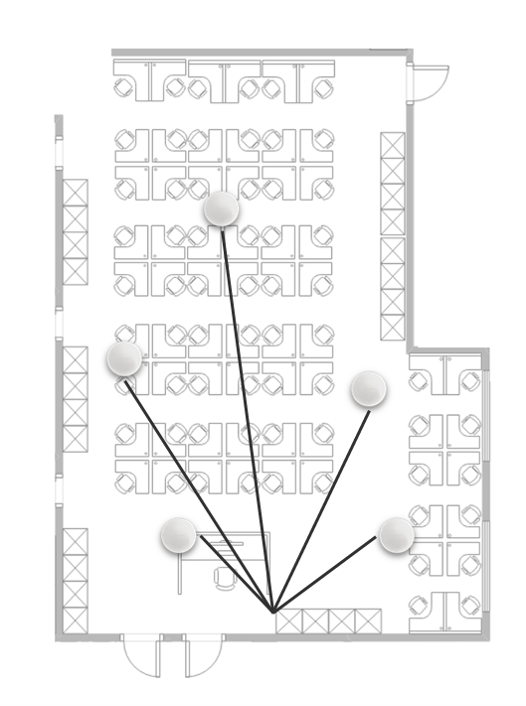
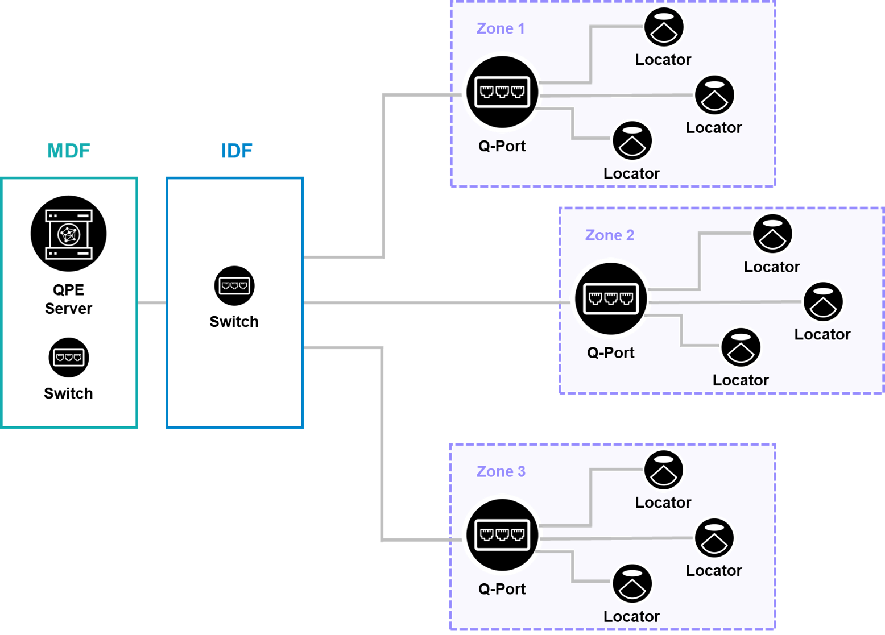
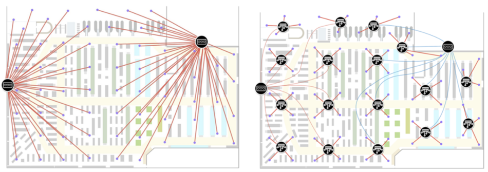

Native Quuppa Connectivity
Quuppa Technical White Paper
April 2022
Table of Contents
Cabled Connectivity
In a typical network infrastructure, the Quuppa Locators are connected to the network using Ethernet cables. Ethernet cables are ideal for the purpose as they can provide both power and Ethernet connectivity to the Locators when connected using a PoE switch. In the vast majority of use cases, especially for indoor deployments, a cabled infrastructure is recommended as it's the most convenient and sometimes even the most cost-effective option once total costs are considered.

In the image above, you can see that there is an Ethernet cable run for each Locator in the deployment directly from the wiring closet, where a PoE switch is located. This is a very typical setup of smaller deployments.
The key advantage of using a simple setup of Ethernet cables to provide direct connectivity for a Quuppa system is that a cabled network will always provide the most reliable and robust connection between the infrastructure components. This means that you can set up a system with lower latency and higher capacity and be sure that any data loss will be kept to a minimum.
However, the challenge with such setups is that running Ethernet cables to each Locator can become very expensive for larger deployments and in some environments it can also be very impractical or even impossible to install the required Ethernet cables. For these reasons, this classic setup may not be optimal for all deployments. The following sections of this document will outline some alternatives to reduce deployment costs with cabled network setups and to explore alternative connectivity options for environments where it's not possible to use Ethernet cables.
Aggregated Cabling for Cabled Connectivity
While cabled connectivity using Ethernet cables provides superior reliability for the system, the cost of installing extensive Ethernet cable infrastructure can be a significant consideration when deciding to implement a positioning system. Luckily, there are some options to optimise the cabling infrastructure that you can consider to help reduce the cost of deployment. One such option is zonal cabling, which will be described in this section.
Zonal cabling is the installation of Ethernet terminations and PoE devices at key strategic locations in the deployment, allowing for shorter cable runs for a number of devices and far fewer home runs back to the intermediate distribution frames (IDF) and the main distribution frame (MDF), as shown in the image below. Inexpensive devices, such as Q-Ports, can be deployed in this environment to keep hardware cost at a minimum when calculated at a per Locator price.
Considerations for this type of deployment include:
-
Providing electrical power to the deployed zonal Q-Ports
-
The cost of Q-Ports versus the cost of home runs for serviced Locators
Zonal cabling is a cost-effective and reliable option for deploying a Quuppa system. It typically costs much less than providing alternative connectivity options for each Locator (e.g. wireless connectivity) and the cost of shorter cable runs to a zones as opposed to home runs for all Locators can provide a significant cost savings for the deployment as a whole.
For example, the images below show two different cabling options for the same deployment, that demonstrate the difference that zonal cabling can have on the total cost of the deployment. In the image on the left each Locator is directly connected to a PoE switch in a wiring closet, with an estimated cable length of some 3.8 km for the whole deployment. In the image on the right, each Locator is connected to a Q-port, which in turn connects to the PoE switch in the wiring closet, with an estimated cable length of some 1.7 km for the whole deployment. The difference of some 2.1 km of cabling that needs to be installed is a significant saving for the deployment, especially when we consider that the two options provide the same coverage for the same area with the same reliability.

The key advantages of using zonal cabling are that you can keep the cost of the deployment down, while still enjoying the benefits of a cabled system that is more reliable, less susceptible to changes in the environment and not impacted by potential interference issues from the existing WiFi infrastructure.
The downside to zonal cabling is that you will still need to install cabling runs throughout the deployment environment. This means that you will need a specialist installation crew to install the system and that this solution doesn't solve the issue of extending the positioning system to areas where Ethernet cables just aren't an option. However, the reduced cost of deployment still makes this an excellent option for most deployments, especially indoor ones.